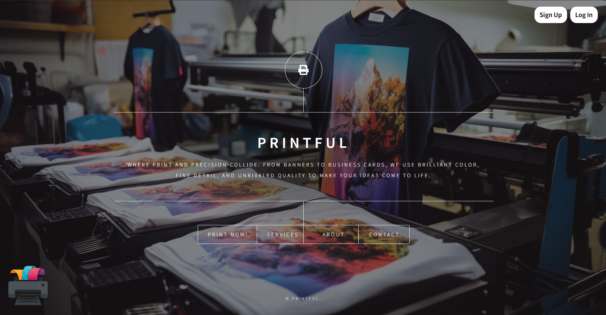

|
Detail-oriented professional with a background in operations, quality analysis, and digital solutions — building tools that streamline workflows and solve real problems.
With a strong foundation in administrative support, product inspection, and analytical workflows, I bring rigorous attention to detail, sharp problem-solving instincts, and a relentless drive for efficiency.
I built this portfolio to showcase my technical projects — including custom digital ordering tools — as I transition into roles where I can combine operational expertise with modern web technology.
HTML5, CSS3, JavaScript — building responsive, functional web applications from scratch.
Product inspection, compliance checks, and data-driven quality assurance processes.
Streamlining workflows, preventive maintenance, and process optimization to ensure smooth daily operations.
Identifying root causes and troubleshooting operational bottlenecks with data-driven solutions.

A functional web application designed for a printing business to streamline customer order placement, file uploads, and specification management. Built to reduce manual errors and accelerate turnaround times. Includes built-in validation to ensure customer specifications meet printing standards before submission
I'm currently open to new opportunities and collaborations. Whether you have a project in mind or just want to connect — I'd love to hear from you.